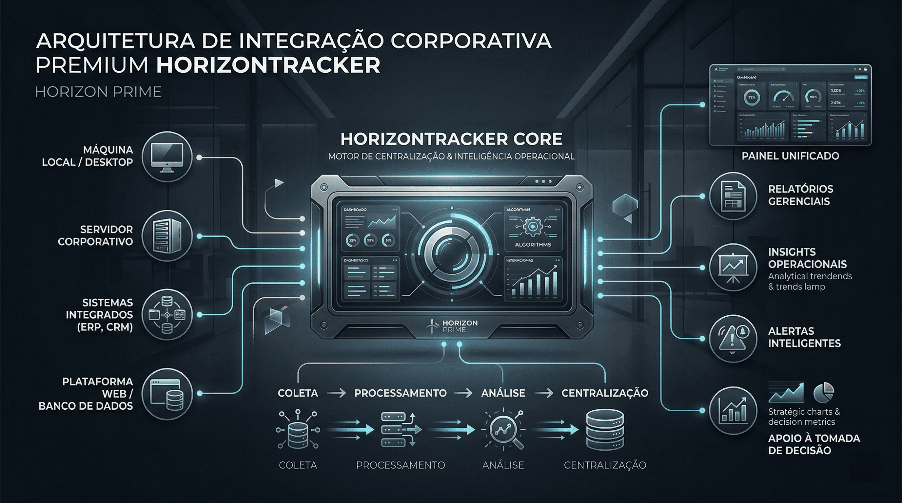

Atuação no mercado de tecnologia com visão prática e estratégica.
Software, consultoria estratégica e catálogo SaaS
Tecnologia pensada para reduzir custos, centralizar dados e dar mais clareza para o negócio.
A Horizon Prime atua onde a operação trava: processos manuais, sistemas desconectados, retrabalho e baixa visibilidade dos dados. Estruturamos software, integração e inteligência para transformar tecnologia em eficiência operacional.

Consultoria estratégica, softwares próprios e fábrica sob demanda.
Redução de custo, produtividade, automação e centralização de dados.
O que a Horizon Prime faz
Estrutura tecnologia como ferramenta de gestão, produtividade e crescimento sustentável.
A Horizon Prime combina 8 anos de experiência no mercado de tecnologia com uma visão moderna de inovação, desenvolvendo soluções que reduzem custos, aumentam a produtividade e apoiam decisões com mais inteligência.
Consultoria estratégica
Mapeamos gargalos, sistemas, dependências e prioridades para orientar decisões de tecnologia com mais clareza.
Catálogo SaaS
Oferecemos softwares próprios para monitoramento, segurança, integração, comercial, financeiro, gestão e analytics.
Fábrica de software
Desenvolvemos soluções sob medida quando o desafio exige automação, integração ou produto personalizado.
Problema do mercado
A tecnologia evolui rápido, mas muitas empresas ainda operam com baixa visibilidade.
A tecnologia evolui rapidamente, mas muitas empresas ainda operam com processos manuais, sistemas desconectados e pouca visibilidade dos dados.
Processos manuais
Rotinas críticas continuam dependendo de planilhas, controles paralelos e validações dispersas.
Sistemas desconectados
ERP, CRM, financeiro, nuvem e operação falam linguagens diferentes dentro da mesma empresa.
Dados sem leitura executiva
O volume cresce, mas a gestão continua sem um panorama confiável para decidir com rapidez.
Custo operacional escondido
Retrabalho, demora, falhas e ineficiência se acumulam sem uma visão consolidada da operação.
Como resolvemos
Combinamos visão estratégica, execução técnica e software para encurtar o caminho entre problema e resultado.
Em vez de empilhar ferramentas, estruturamos uma arquitetura mais clara para a operação: o que automatizar, o que integrar, o que comprar pronto e o que desenvolver sob medida.
Diagnóstico do cenário
Entendemos fluxos, sistemas, gargalos e pontos de perda operacional.
Definição da abordagem
Indicamos quando vale usar SaaS, integração, automação ou desenvolvimento personalizado.
Implementação com visão prática
Executamos com foco em adoção, clareza operacional e impacto real no negócio.
Evolução orientada por dados
Ajustamos e expandimos a solução conforme a operação amadurece.
Softwares Horizon Prime
Catálogo SaaS organizado para facilitar entendimento comercial e acelerar decisão.
Estruturamos o portfólio em duas frentes: softwares de tecnologia e softwares convencionais. Cada item mostra o problema que resolve, preço para parceiro TI e valor sugerido para cliente final.
Softwares de Tecnologia
Infraestrutura, segurança, nuvem, integração e analytics.
HorizonTracker
Monitoramento e rastreabilidade com visão operacional em tempo real.
Resolve a falta de visibilidade sobre desempenho, ativos e histórico operacional.Parceiro TI: R$ 297/mêsCliente final: R$ 697/mês
WhatsApp
HorizonShield
Segurança gerenciada com foco em risco, conformidade e continuidade.
Resolve a dificuldade de identificar riscos e acessos indevidos antes que virem incidente.Parceiro TI: R$ 197/mêsCliente final: R$ 597/mês
WhatsApp
HorizonCloud
Governança de nuvem, disponibilidade e controle de custos em uma única camada.
Resolve ambientes em nuvem desorganizados, com pouca governança e baixa previsibilidade.Parceiro TI: R$ 347/mêsCliente final: R$ 797/mês
WhatsApp
HorizonAnalytics
Dashboards executivos para transformar dados dispersos em decisões práticas.
Resolve dependência de planilhas, relatórios manuais e baixa confiança nos números.Parceiro TI: R$ 297/mêsCliente final: R$ 697/mês
WhatsApp
HorizonSync
Integra sistemas, APIs e bases legadas sem criar mais retrabalho.
Resolve retrabalho operacional causado por sistemas que não se conversam.Parceiro TI: R$ 247/mêsCliente final: R$ 597/mês
WhatsApp
Softwares Convencionais
Comercial, financeiro, gestão, pessoas e IA aplicada ao negócio.
HorizonCRM
Gestão comercial mais clara, previsível e conectada aos canais de atendimento.
Resolve perda de oportunidades, follow-up inconsistente e baixa visibilidade do funil.Parceiro TI: R$ 147/mêsCliente final: R$ 397/mês
WhatsApp
HorizonFinance
Controle financeiro com mais previsibilidade, disciplina e menos planilhas.
Resolve retrabalho financeiro, baixa previsibilidade de caixa e controles paralelos.Parceiro TI: R$ 197/mêsCliente final: R$ 447/mês
WhatsApp
HorizonERP
Gestão integrada para empresas que precisam operar com mais consistência.
Resolve processos fragmentados, retrabalho entre departamentos e dificuldade de escalar a gestão.Parceiro TI: R$ 397/mêsCliente final: R$ 797/mês
WhatsApp
HorizonPeople
Pessoas, rotinas e conformidade trabalhista organizadas em uma mesma plataforma.
Resolve processos de RH dispersos, excesso de tarefas manuais e baixa rastreabilidade.Parceiro TI: R$ 247/mêsCliente final: R$ 597/mês
WhatsApp
HorizonAI
IA aplicada ao negócio para acelerar atendimento, análise e execução.
Resolve tempo perdido com tarefas repetitivas e decisões operacionais lentas.Parceiro TI: R$ 247/mêsCliente final: R$ 597/mês
WhatsApp
Fábrica de software Horizon Prime
Quando o desafio não cabe em uma ferramenta pronta, a Horizon Prime desenvolve a solução certa.
A frente sob demanda existe para empresas que precisam sair de controles improvisados e construir tecnologia aderente ao processo real.
Desenvolvimento personalizado
Sistemas, portais, módulos e plataformas internas desenhadas para a operação real do cliente.
Automações
Redução de tarefas repetitivas, aprovações manuais e rotinas que travam produtividade.
Integrações
Conexão entre ERPs, CRMs, APIs, bancos de dados, sistemas legados e ferramentas terceiras.
IA aplicada ao negócio
Atendimento assistido, triagem inteligente, apoio à decisão e fluxos automatizados com IA.
Diferenciais
Posicionamento mais estratégico, execução mais prática e foco claro em valor operacional.
A Horizon Prime foi desenhada para não parecer apenas uma software house nem apenas uma consultoria. A proposta é unir visão, produto e execução.
Visão de negócio
Cada solução é apresentada pelo problema que resolve, não apenas pela tecnologia envolvida.
Clareza comercial
O portfólio separa SaaS, consultoria e sob demanda com linguagem mais clara para venda e decisão.
Integração como prioridade
A proposta parte da realidade do mercado: o desafio costuma estar na conexão entre áreas e sistemas.
Inovação com uso prático
IA, automação e dados entram para gerar eficiência e inteligência operacional, não discurso vazio.
Contato Horizon Prime
Abrir WhatsApp com mensagem pronta
Fale com a Horizon Prime pelo WhatsApp e explique seu cenário com simplicidade.
O contato começa com contexto, não com pressão. Você pode chegar com uma necessidade aberta e a Horizon Prime ajuda a direcionar se o melhor caminho é software pronto, consultoria ou projeto sob medida.
WhatsApp
(31) 99776-8394
Mensagem padrão
"Olá! Vim pelo site da Horizon Prime e gostaria de mais informações."
Quero entender o catálogo SaaS
Ideal para quem quer conhecer os softwares e entender qual faz sentido para a operação.
Falar sobre softwaresPreciso de algo sob medida
Para empresas que precisam desenvolver uma solução, automatizar processos ou integrar sistemas.
Falar sobre sob demandaQuero conversar sobre estratégia
Para cenários em que a empresa precisa organizar melhor a direção tecnológica antes da implementação.
Falar sobre estratégiaTecnologia faz mais sentido quando deixa a operação mais simples, mais conectada e mais inteligente.
Se a sua empresa convive com retrabalho, dados dispersos e pouca visibilidade, a Horizon Prime pode ajudar a estruturar a próxima etapa.